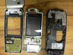

Reengineering the S65 Display
Reengineering the S65 DisplayThe Siemens S65 display is a special manufacturing for the Siemens AG (now Siemens/BenQ). Because of that it is very difficult to get data sheets for the used display controller. The display is a product of Seiko-Epson but does not response to the known Epson display commands (also not to the commands of relative new epson 16-bit controller). Because of that i decided to do a re-engineering of the display interface using a S65 mobile phone.

 It was easy to figure out that Siemens uses a serial two wire interface with additional chip select, a command/data signal (usually called RS) and a reset signal. The clock frequency of the serial interface is 13MHz. Supply voltages are 2.9V for the display driver and 1.8V for the digital interface. In addition there are two supply pins for the four white backlight LED's. The LED's are serial connected and buffered with a capacitance on the display board. The serial connection ensures a very constant light intensity distribution. That is because each LED is driven by the same current. The disadvantage is that a relative high voltage is needed for driving the LEDs. The LED voltage was measured to 10.4V at 20mA for one display. But in the hardware section you can see that it is not very difficult to generate the voltage with a PWM signal generated by the µC. The display pin out can be seen on the figure on the left side. CS is the chip select line, CLK the clock line, DAT the data line, RS the command/data identification, 2V9 the 2.9V supply, 1V8 the 1.8V supply, LED+ the positive LED supply and LED_GND the negative LED supply.
It was easy to figure out that Siemens uses a serial two wire interface with additional chip select, a command/data signal (usually called RS) and a reset signal. The clock frequency of the serial interface is 13MHz. Supply voltages are 2.9V for the display driver and 1.8V for the digital interface. In addition there are two supply pins for the four white backlight LED's. The LED's are serial connected and buffered with a capacitance on the display board. The serial connection ensures a very constant light intensity distribution. That is because each LED is driven by the same current. The disadvantage is that a relative high voltage is needed for driving the LEDs. The LED voltage was measured to 10.4V at 20mA for one display. But in the hardware section you can see that it is not very difficult to generate the voltage with a PWM signal generated by the µC. The display pin out can be seen on the figure on the left side. CS is the chip select line, CLK the clock line, DAT the data line, RS the command/data identification, 2V9 the 2.9V supply, 1V8 the 1.8V supply, LED+ the positive LED supply and LED_GND the negative LED supply.
 The display interface was measured using a HP (Agilent) 16-channel digital oscilloscope. (unfortunately a logic analyser was not available) The results together with a short description can be found in the S65_Startup.zip file.
The display interface was measured using a HP (Agilent) 16-channel digital oscilloscope. (unfortunately a logic analyser was not available) The results together with a short description can be found in the S65_Startup.zip file.
The display commands and data are written in a 16-bit format like the example on the picture. A data bit is latched with the rising edge of the clock signal by the display controller.
The following sequences for starting the display could be identified:
Sequence 1: (time 0ms)Sequence 2: (time 68ms after start)
Sequence 3: (time 75ms after start)
Sequence 4: (time 182ms after start)
Sequence 5: (time 297ms after start)
Sequence 6: (time 401ms after start)
Sequence 7: (time 460ms after start)
In addition it could be measured, that Siemens always refreshes the screen at once. That means also if only parts of the screen are changed the complete display memory is refreshed. Reason for that is, that Siemens uses an display graphic controller like the s1d13732. This controller holds the display memory and writes the display content via hardware. Only the commands are generated by the µC. The sequence used by Siemens for writing the compete display is:
write complete display memory:After that the display data follows (with RS line low). Writing the display data takes 28.59ms which corresponds to (132*176*16=371712 bits with 13MHz clock frequency.
Unfortunately the power down sequence could not be measured with the used equipment. It was not possible to find a proper trigger condition to get a reliable repeatable measurement of the power down sequence. Triggering to the backlight was possible but the memory of the digital scope was to small to catch the sequences. Unfortunately the backlight is switched off after the display is powered down. Spending more effort it might be possible to catch the power down sequence but that is not done up to now. The proposed sequence so far is reset of display and switching off the supply.
{kind=link}